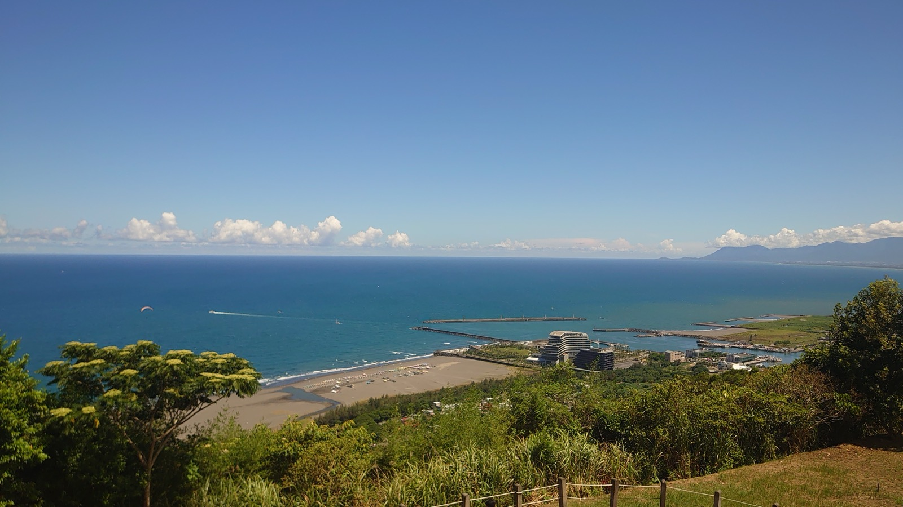
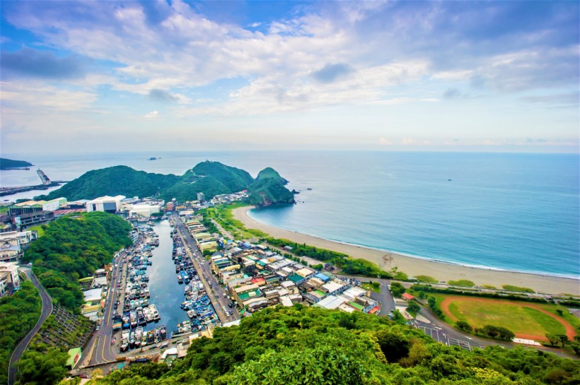
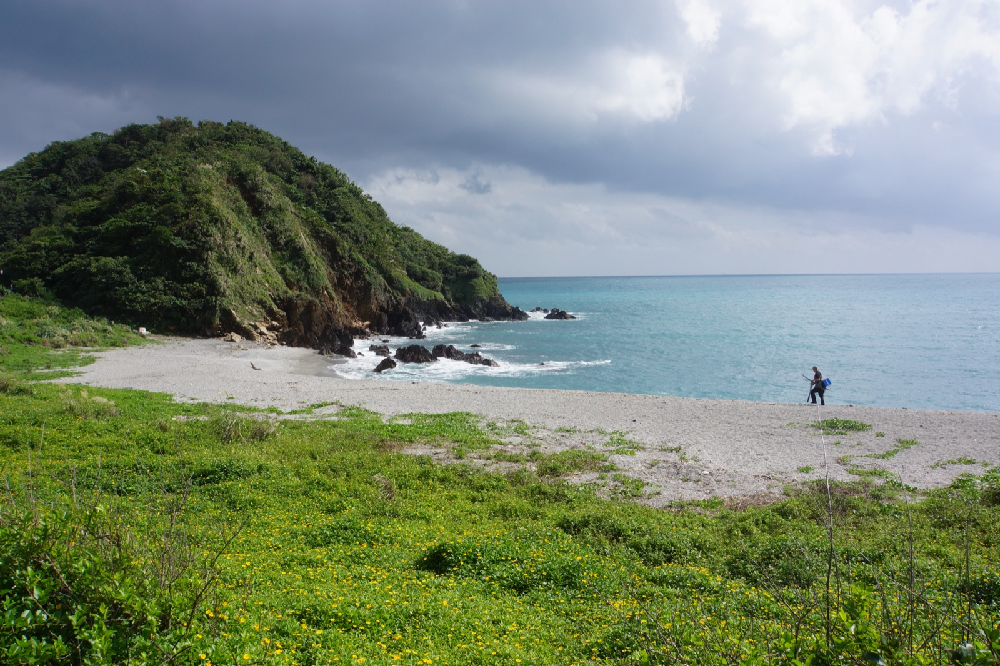

四天三夜 · 桃園來回 · 台北與宜蘭自駕
把今年最後幾天，
留給海風與熱湯。
從台北101的城市風景，到宜蘭溫泉與港邊餐桌。
少一點趕路，多一點舒服的風景。
12.292026 二—01.012027 五
香港出發／台灣與香港同為 UTC+8／雙人房預算比較

海 · 湯 · 年
慢 遊 宜 蘭
慢 遊 宜 蘭
這趟旅行的節奏
台北一晚，
接著一路向海。
桃園取車後先住台北信義區，第二天依序外澳、頭城、礁溪，第三天往南住蘇澳。每天一至兩個主題；車停附近，散步可縮短。全程自駕，不安排公共交通。
每日重點 ≤ 2步行約 1–15 分鐘／段跨年夜留在飯店
少折返版本：台北 → 外澳 → 頭城 → 礁溪 → 蘇澳，元旦直接回桃園。代價是三晚住不同飯店、每天搬一次行李；先在合法下客處卸行李，再由駕駛停車。
THE ROAD BOOK
一天一頁，剛剛好的行程。
切換日期，勾選想停的地方。
選項與預算會留在同一個瀏覽器。
PLACES TO REMEMBER
值得留時間的風景。
重要景點先看；順路選項，當天看心情。


礁溪與頭城也要留時間
台北101是首日城市重點；湯圍溝放第二晚。頭城老街用20–30分鐘短City Walk即可。蘭陽博物館12/30週三休館，新增台北後不再勉強插入館內參觀；五峰旗有階梯，不放主線。
TAIPEI, WITHOUT THE RUSH
台北也有份，但只留一個舒服的重點。
12/29住信義區 · 不跑遠 · 不搭公共交通
外觀、室內觀景，自己選。
一般觀景票目前NT$600／人、快速票NT$1,200／人；10:00–21:00，末入場依票種公告。入口自2026/7/1起暫移至辦公大樓1樓。一般票可能排電梯；快通也非保證零等待。
車直接進101地下場，再問最近電梯。只看89/88F、不爬樓梯；天候差就留商場吃飯。抵台晚便取消上樓，翌晨短看外觀後出發。
官方票價與購票市區少移車，尖峰不硬趕。
桃園到信義區以50–80分鐘作規劃，尖峰可能90–120分鐘以上。不要在抵台日同時跑九份、淡水或陽明山；象山有階梯，也不符合這次少走路偏好。
住宿先卸行李，再去停車。君悅、101、A9雖近，若同行者不想走，仍可短程開車入各自停車場，接受一次移車與額外停車費。
101停車導航台菜坐著吃，城市慢慢看。
欣葉台菜信義A9店17:00早晚餐，或入住艾美後直接寒舍食譜用餐。兩家可預約，不把鼎泰豐長隊或夜市擠人列為必要。
101上樓請先在12/29日程勾選，票價會進入預算；可切換一般／快速票。住宿選擇也會同步改變每日導航。
查看台北餐桌THREE WAYS TO SAY HELLO
跨年，選舒服的那一種。
以下為官方公告安排，
房況、天候與臨時調整仍須出發前確認。
蘇澳瓏山林
泡完湯，走到飯店派對。
21:30跨年派對22:00現場音樂00:00180 秒低空煙火
12/31 雙人含早餐與派對 NT$9,900 起；含跨年晚餐 NT$12,900 起，已含稅與服務費。
公告基礎房為和式單湯池。早鳥雙湯池升等有房況限制。這是公告起價，未確認即時空房；煙火受天候及主辦安排影響。
查看官方跨年方案礁溪長榮鳳凰
室內派對，留在礁溪。
22:20開放入場22:30派對開始00:30活動結束
住客憑券參加，官方限定 12/31 當日入住。12/30起連住能否參加，必須先向飯店確認。
含樂團、輕食與摸彩，未保證煙火。跨年住房價待報價；若採此案，12/31 南方澳可取消，減少開車。官網直讀曾逾時，活動內容由官方索引核對。
查看官方活動條件台北 101
只選有座位的室內觀賞。
19:00官方跨年晚會開始00:00迎接新年01:00晚會結束
若選此案，12/31 改住台北。先向飯店／餐廳確認 101 視野與室內座位，不要靠房名推測看得到。
全程不搭公共交通：車留飯店，必要移動改計程車，但管制與叫車等待仍可能很久。因此不列主案；晚間不開車穿越信義區。住宿、座位與計程車另報價。
查看官方活動與管制STAY FOR THE HOT SPRINGS
城市住一晚，溫泉住兩晚。
主案：台北、礁溪、蘇澳各一晚。
以下按雙人一房比較，未查即時房況。
住宿只列官方房型與實用條件，沒有以 AI 圖冒充飯店實景。房價除瓏山林當期跨年起價外均為規劃估算；早餐、稅費、私湯房型及每房車位請在付款前寫入訂單。
A TASTE OF YILAN
吃在路上，不為排隊繞路。
每餐挑一家就好。
金額為雙人估算，不是即時菜單報價。
查核日 2026/11/25。年底營業、公休與供餐可能變更；未核實部分已在卡片註明。遇到長隊直接換附近備選，跨年晚餐留飯店。
CHOOSE THE RIGHT SUV
日系SUV，先比全包價。
雙人主推Corolla Cross；想要更大空間再選RAV4。
以下非12/29–1/1即時報價，沒有預訂車輛。
Corolla Cross
官方目前NT$2,280／日起、牌價3,800／日；香港證件適用價格與跨年加價要由機場站書面確認。
C級安心免責外國籍欄：標準700／日、尊榮900／日；香港證件分類先問門市。尊榮才增加輪胎、玻璃、鋼圈等範圍，仍有契約限制。
含油里程費3.3／km，400km約1,320，不再加一次全額汽油。機場站列航站南路15號；櫃檯、交車場、接駁與時段直接確認。
官方車型價目 · 免責方案Corolla Cross
官方目前NT$2,380／日起、牌價3,400／日；起價的外籍適用及跨年日期需確認。
行車守護按此牌價車型500／日，非中華民國駕照加200，合計700／日；不是無條件全險，輪胎破損、全損等不在同一免責範圍。
桃園機場一／二航站官方列09:00–20:00、需預約，03-386-0877。也採油卡／里程模式，單價依車款詢問；別再另加全額油費。
官方車型價目 · 行車守護Toyota RAV4
官方牌價NT$4,500／日。網路2,700起註明限本國國民，香港旅客不能直接以該優惠作報價。
5座、官網行李欄列2大2小。基本租金3日13,500、4日18,000；加購免責先估300–800／日，適用香港證件與實際保障需問門市。
含油里程費3.6／km，400km約1,440。此款官方列不提供甲租乙還；本案桃園同站取還可先詢。機場接駁時段尚未完整核實。
官方車款與價格 · 租車條款大概要留多少？
以4日＋加購免責＋約400km油資：Corolla Cross先留約NT$14,000–20,000；RAV4先留約NT$20,000–23,000，均未含停車、通行費、接駁及超時等附加費。這是規劃範圍，不是跨年上限或確認報價。
格上與中租可先詢同一份條件；選有書面確認香港證件、車型、行李空間、實際取還時數及免責範圍的方案。若RAV4為指定需求，優先詢和運。跨年熱門車型可能額滿。
3天、4天，還是3天加超時？
12/29 14:00取、1/1 14:00還正好72小時；若元旦15:00–16:00還，多出的1–2小時不一定算整個第4日。格上、和運一般逾時每小時按日租金十分之一，逾6小時按一日；中租逾8小時按一日，均以所選方案為準。不要為省超時費壓縮機場餘裕。
KNOW BEFORE YOU GO
旅費攤開來，玩得更安心。
以 2 人／1 房／1 車計算，全部為新台幣。
可改預留值，立即重新加總。
| 項目與計算假設 | 範圍／狀態 | 預留 NT$ |
|---|
租車預設先按4日預留，可切換3日作比較；實際若超過72小時，可能收超時費或第4天，須由門市報價。車行跨年加價、保險自負額、異店還車及非營業時段費，均以契約為準。
每餐怎樣算？會不會重複收費？
未包餐餐費含抵台午餐 400–800、12/29台北晚餐1,500–2,500、12/30 午晚餐 850–1,500、12/31 海鮮午餐 1,500–2,500、元旦途中午餐 400–800，合計4,650–8,100。飲料甜點另列 600–1,000。早餐假設三晚住宿皆已含；瓏山林含晚餐方案不再加一次跨年晚餐與派對費，改含早方案才增列晚餐預留。
總額以外，還要確認什麼？
入台許可費依申請途徑及系統為準，可填入「許可／額外費用」；香港機場交通、旅遊保險、通訊、行李選位均可自行調整。租車押金與信用卡預授權屬資金佔用，沒有加進旅費；罰單、損害自負額、醫療與非自願改期不屬正常旅遊支出。租車報價若已包油或保險，請相應把重複欄位改為 0。
PARK, THEN TAKE IT SLOW
每一站，車停哪裡？
正式費率與預留金分開列。
各站金額已包含在整趟停車預算，不再重複加總。
| 停靠地點 | 停車與費率 | 步行／門票 | 導航與來源 |
|---|
ROOM FOR THE UNEXPECTED
鬆一點，應變也更容易。
把最重要的餘裕留給航班
12/29 晚到：若取車後已過18:00或精神不足，直接入住台北，取消101觀景台與晚餐外出；通知館方晚入住。非常晚可改機場附近短程住宿，與原訂飯店確認變更及費用；不疲勞趕往宜蘭。
元旦：主案早餐後 10:30–11:00 離蘇澳。一般純行車約 2.5–3.5 小時，連假可能 4–6 小時以上；加油、驗車還車、接駁另留 60–90 分鐘，再按航空公司要求，通常起飛前 2–3 小時到航廈。
選傍晚偏晚、約 19:30 後航班作規劃參考，尚未選班。若航班較早或路況惡化，改 08:00–09:00 出發，取消沿途用餐停靠；出發前看即時路況。若預估無法趕上，先聯絡航空公司評估改班，不保證任何時刻必定趕得上。
高公局 1968 即時路況天氣不好，就把時間還給湯池
12/30 雨天：台北退房後直接開往礁溪，取消外澳與頭城，寄存行李、午餐後按訂單入住泡湯。蘭陽博物館當天休館，不作雨備。
12/31 強風雨：港邊午餐後早入住瓏山林，略過觀景台和海灣。房內私湯、休息與室內活動就已足夠。
減少步行：景點寫的分鐘為單段估算，非無障礙認證。需要時先合法下客，再由駕駛停車；不要求走沙灘、爬階梯或把老街走到底。車內等候也不要停在禁止停車處。
中央氣象署天氣先確認規則，再決定出發時間
1/1 沒有高乘載管制。1/2–1/3 13:00–18:00 才於蘇澳、羅東、宜蘭、頭城指定北向入口實施；無管制仍可能塞車。高公局元旦官網表
香港出生、具香港永久居留資格的旅客先按港澳居民網簽規則核對，其他護照等條件仍須符合，以移民署審核為準；建議預先辦妥。移民署
帶有效香港國際駕駛許可證、原正式駕照、護照及本人信用卡；訂車前向門市確認駕駛資格、保險及接駁。門市 FAQ · 機場租車
台灣禁止電子煙及其組合元件輸入、販售與使用，請勿攜入，也不要在台購買。官方規定
預訂順序
先鎖跨年夜，再填好其餘三天。
- 跨年飯店先問瓏山林12/31空房、餐食、派對與私湯；礁溪備案確認12/30起連住資格。
- 航班與取還車確認元旦傍晚回港航班，倒推還車與路況餘裕。
- 台北與礁溪各一晚台北確認車位與早餐，礁溪確認私湯房及車位；兩地都先問合法下客位置。
- 一頓海鮮預約 12/31 午餐；其餘餐廳以順路與不排長隊為原則。
本頁為規劃工具；沒有進行任何訂房、訂餐、機票、租車或日曆操作。
A LITTLE GUIDE, SHARED WITH YOU
掃一下，
就一起出發。
掃描QR Code就直接打開完整旅遊App，不需登入。繁體、簡體都能切換，手機也能查看四日路線、導航與預算。